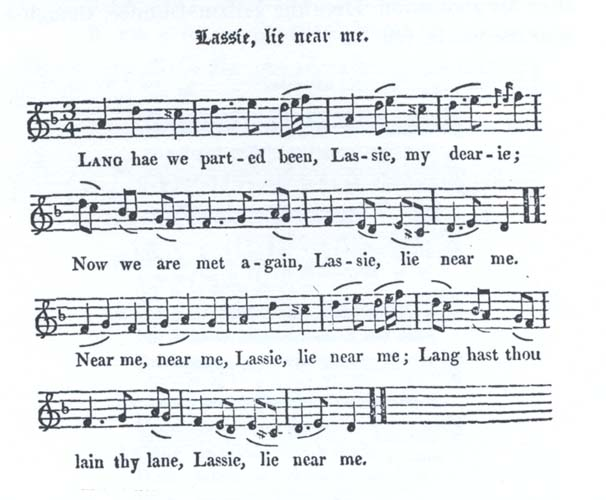

Lassie, lie near me
Ta place est ici
From Cromek's "Remains of Nithsdale and Galloway Song", page 189, 1810
and Hogg's "Jacobite Relics" 2nd Series N°110, 1821
Sequenced by Christian Souchon
Tune - Mélodie
"Laddie lie near me"
from from Hogg's "Jacobite Relics" 2nd Series N°63
Sequenced by Christian Souchon

|
To the tune:
English tune from Northumberland. The title "Laddie, lie near me" is mentioned in Henry Robson's list of popular Northumbrian song and dance tunes, "The Northern Minstrel's Budget", published c. 1800. The song, Hogg wrote, “is from Cromek; being an old song, a little varied from the original of Laddie, lie near me ,” followed by a very long note (20 pages) on the battle and the aftermath of Culloden. The song "Laddie, lie near me" is published in the Scots Musical Museum Volume III under #218 pages 226 and 227, 1790, with following Non-Jacobite text : 'Hark the loud tempest shakes Earth to its center, How mad, were the task on a journey to venture, How dismal's my prospect! of life, I am weary, O listen my love I beseech thee to hear me. Hear me, hear me, in tenderness hear me, All the long winter night Laddie be near me.' In his notes on the 'Museum', Burns has a very short entry for this song, 'This song by Blacklock'. He is referring to Thomas Blacklock (1721-91), a friend and fellow poet. Burns did not know the air Source "The Fiddler's Companion" (cf. Links). The first publisher of the Jacobite version of the song, R.H. Cromek adds a note to the effect that he was advised to change its title for "Wifie, lie near me" but that he considered "that these songs, in their present garb, were worthy of all acceptation". This proclivity to sanitizing Scottish songs was catching and came to a climax in Lady Nairne's transcriptions. |
A propos de la mélodie:
Mélodie anglaise du Northumberland. Le titre "Laddie, lie near me" est cité par Henry Robson parmi la liste de chants populaires de Northumbrie, "the Northern Minstrel's Budget" qu'il publia vers 1800. Ce chant, aux dires de Hogg, est tiré du recueil de Cromek où il se présente comme une variante d'une ancienne chanson dont le titre était "Laddie, lie near me” ("Mon ami viens près de moi"). Puis vient une longue explication sur la bataille de Culloden et les événements qui s'ensuivirent. Le chant ("Mon ami...") est publié dans le Musée Musical Ecossais Volume III , 1790, sous le N° 218 pages 226 et 227 avec les paroles non-Jacobites suivantes: "Entends-tu la tempête? Elle ébranle la terre. Partir par les chemins serait bien téméraire. De redoutables jours me semblent destinés; Mon bien-aimé, je te supplie de m'écouter, Oui de m'écouter, pour l'amour de moi! En cette nuit d'hiver, reste donc avec moi!" Dans ses notes sur le "Musée", Burns fait cette remarque laconique: "Ce chant est de Blacklock." Il s'agit de Thomas Blacklock (1721-91), un ami et confrère de Burns. Par contre l'air lui était inconnu. Source "The Fiddler's Companion" (cf. Liens). Le premier éditeur de la version Jacobite du chant, R.H. Cromek indique dans une note qu'on lui avait recommandé de changer le titre en "Chère épouse, viens près de moi", mais qu'il considérait "que ces chants dans leur habillage actuel étaient tout à fait acceptables". Cette tendance contagieuse à aseptiser les chants écossais fut poussée à l'extrême par Lady Nairne. |